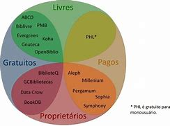
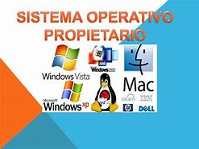
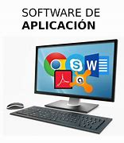

Um sistema operacional (OS) é um software fundamental que gerencia o hardware e os recursos de um computador, além e fornecer serviços essenciais para que outros programas possam funcionar. Ele atua como uma ponte entre o usuário e o hardware do computador, facilitando a execução de tarefas e garantindo que os recursos sejam utilizados de forma eficiente.
Esses sistemas são aqueles que têm distribuição gratuita, ou seja, você não precisa pagar para utilizá-lo na sua máquina. O mais famoso dentre esses sistemas é com certeza o Linux. Basta que o usuário instale esse sistema livre na máquina e assim poderá usá-la sempre problemas. Muitos acreditam que os computadores já vêm da loja com o Windows, mas na verdade quando você compra a sua máquina pode escolher se compra ou não o sistema operacional junto.
Dessa forma você paga pelo sistema operacional também na hora da compra. Com o sistema livre você não terá esse gasto, mas preciso ter bem claro que ele não será exatamente como um sistema pago. Além disso, é um pouco complicado conseguir compatibilidade entre os programas de sistemas livres.
O software proprietário, privativo ou não livre, é um software para computadores que é licenciado com direitos exclusivos para o produtor. Conforme o local de distribuição do software este pode ser abrangido por patentes, direitos de autor assim como limitações para a sua exportação.
O software de sistema é um conjunto de programas ou aplicativos nativos que têm dois propósitos: gerenciar recursos físicos do dispositivo para coordenar tarefas e administrar a memória para seu uso; e oferecer uma experiência de uso para que seja possível controlar e interagir com o sistema.
Um software aplicativo é um tipo de software concebido para desempenhar tarefas práticas ao usuário para que este possa concretizar determinados trabalhos.
Softwares de programação são ferramentas usadas pelos programadores para desenvolver novos softwares e programas. Eles utilizam diferentes linguagens de programação (C, Java, Python, Swift, etc.) e abrigam compiladores, intérpretes e depuradores.